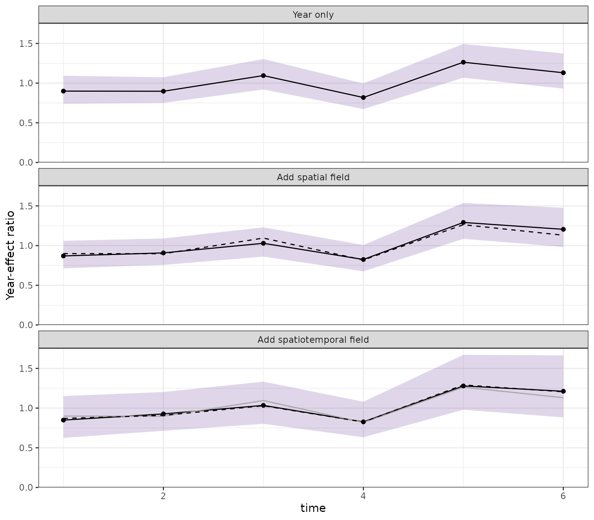
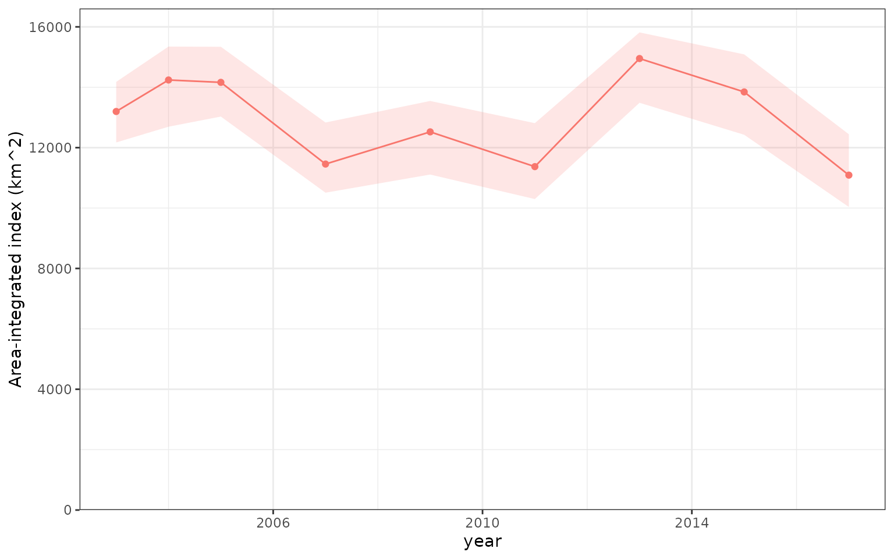
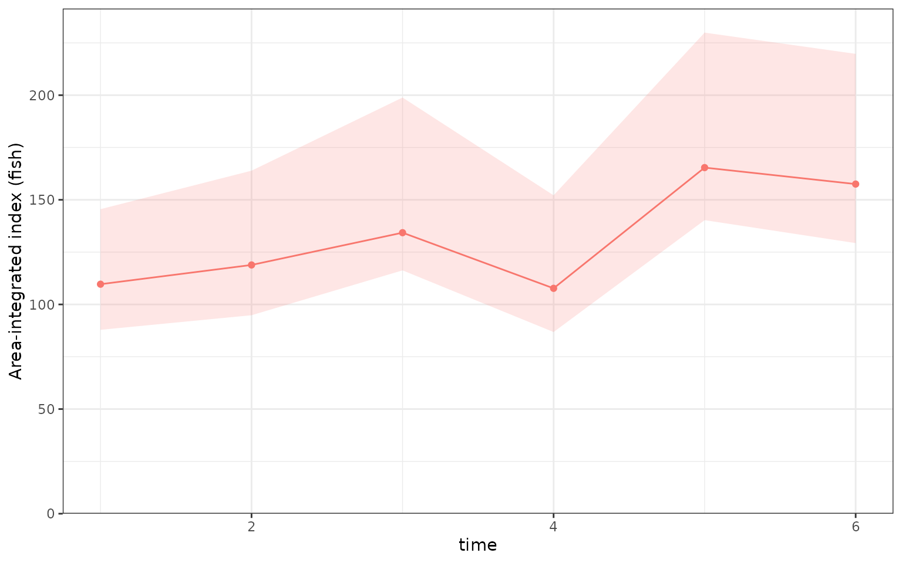

Spatial and spatiotemporal diagnostics
Source:vignettes/spatial-spatiotemporal.Rmd
spatial-spatiotemporal.RmdWhy separate field components?
A spatiotemporal model can contain at least three distinct contributions:
- fixed effects, including measured covariates and temporal effects;
- a persistent spatial field, shared through time; and
- a spatiotemporal field, representing time-specific spatial departures.
Their sum describes the fitted linear predictor, but their influence
interpretations differ. A persistent spatial-field influence can reveal
a change in where observations were collected. A spatiotemporal-field
influence can also contain a genuine fitted annual spatial departure.
influ2 therefore keeps the fields separate instead of
silently combining them.
The examples below follow the packages’ own worked examples: the sdmTMB
introduction and the tinyVAST
vector-autoregressive vignette. They are deliberately small enough
to rebuild as package documentation.
sdmTMB
Data and mesh
The sdmTMB example uses its Pacific cod survey data from
Queen Charlotte Sound (Anderson et al. 2025). The response
is whether Pacific cod were encountered in a tow. Depth is included as a
quadratic effect, and year is the diagnostic focus.
library(influ2)
data("pcod", package = "sdmTMB")
data("qcs_grid", package = "sdmTMB")
ggplot(pcod, aes(X, Y, colour = density)) +
geom_point(size = 1.2) +
coord_fixed() +
scale_colour_viridis_c(trans = "sqrt") +
labs(x = "Easting (km)", y = "Northing (km)", colour = "Density")
Observed Pacific cod survey tows, coloured by catch density.
The triangulated mesh approximates a continuous Matérn spatial field. The coarse cutoff is appropriate for a documentation example, rather than a recommendation for production analysis.

Triangulated mesh used for the Pacific cod spatiotemporal model.
Fit and diagnose
This is the package website’s binomial spatiotemporal model, with a persistent spatial field and independent year-specific spatiotemporal fields.
pcod_model <- sdmTMB::sdmTMB(
present ~ depth_scaled + depth_scaled2,
data = pcod,
mesh = pcod_mesh,
family = binomial(link = "logit"),
spatial = "on",
time = "year",
spatiotemporal = "IID",
silent = TRUE
)
pcod_diagnostic <- influ(
pcod_model,
focus = "year",
ndraws = 100,
seed = 11
)
summary(pcod_diagnostic)
#> Influence diagnostic summary
#> Backend: sdmTMB
#> Family: single binomial (logit)
#> Focus: year
#>
#> term component maximum_absolute_link_influence
#> depth_scaled conditional 0.5119533
#> spatiotemporal_field conditional:latent_fields 0.4760166
#> depth_scaled2 conditional 0.3191610
#> spatial_field conditional:latent_fields 0.2820632
#> level_at_maximum
#> 2003
#> 2011
#> 2004
#> 2003The common components plot shows the influence associated with changing depth coverage, persistent spatial structure, and year-specific spatial departures.
plot(
pcod_diagnostic,
type = "components",
term = c(
"depth_scaled", "depth_scaled2", "spatial_field",
"spatiotemporal_field"
)
)
Fixed, spatial, and spatiotemporal influence components from the sdmTMB Pacific cod model.
Fitted field surfaces
sdmTMB::predict() exposes the persistent field as
omega_s, the spatiotemporal field as
epsilon_st, and their combined contribution as
est_rf. Mapping the same components that enter the
influence diagnostic is an important interpretation check.
mapping_grid <- do.call(
rbind,
lapply(c(2003L, 2017L), function(selected_year) {
transform(qcs_grid, year = selected_year)
})
)
field_predictions <- predict(pcod_model, newdata = mapping_grid)
field_surfaces <- tidyr::pivot_longer(
field_predictions,
cols = c(omega_s, epsilon_st, est_rf),
names_to = "component",
values_to = "link_contribution"
)
field_surfaces$component <- factor(
field_surfaces$component,
levels = c("omega_s", "epsilon_st", "est_rf"),
labels = c("Persistent spatial", "Spatiotemporal", "Combined fields")
)
ggplot(field_surfaces, aes(X, Y, fill = link_contribution)) +
geom_raster() +
coord_fixed() +
facet_grid(component ~ year) +
scale_fill_gradient2(
low = "#2166AC", mid = "white", high = "#B2182B", midpoint = 0
) +
labs(
x = "Easting (km)", y = "Northing (km)",
fill = "Link-scale\ncontribution"
)
Persistent spatial field, year-specific spatiotemporal field, and their sum for two Pacific cod survey years.
Refitted year-effect steps
A separate step plot can show how the fitted year effects change when
spatial and spatiotemporal structure is added. Its models must all
contain an explicit fixed year term. The Pacific cod model above does
not contain one, so the following code first fits a version with
factor(year) while retaining its depth effects and field
structure. This additional sequence is shown without running the refits
during the vignette build.
pcod_year_model <- update(
pcod_model,
formula. = present ~ factor(year) + depth_scaled + depth_scaled2
)
pcod_steps <- influ_steps(
pcod_year_model,
year = "year",
component = "conditional",
refit = TRUE,
steps = list(
"Year + depth" = list(
formula = ~factor(year) + depth_scaled + depth_scaled2,
spatial = "off",
spatiotemporal = "off"
),
"Add spatial field" = list(
formula = ~factor(year) + depth_scaled + depth_scaled2,
spatial = "on",
spatiotemporal = "off"
),
"Add spatiotemporal field" = list(
formula = ~factor(year) + depth_scaled + depth_scaled2,
spatial = "on",
spatiotemporal = "IID"
)
),
ndraws = 100,
seed = 13
)
plot_step(pcod_steps)Every step retains the same observations, depth covariates, and year
term. The fitted year coefficients can change because the likelihood is
re-optimised with a different field structure. These are year-effect
contrasts from refitted models. They are not area-weighted abundance
indices, and the qcs_grid used for the maps is not
integrated to create this plot.
tinyVAST
Simulated spatiotemporal process
The tinyVAST example adapts the package’s official
univariate vector-autoregressive simulation (Thorson et al. 2025). It is smaller,
uses a Poisson response, and adds changing spatial coverage so that an
influence diagnostic has a sampling pattern to detect. The known process
contains a persistent spatial field and an AR(1) spatiotemporal
field.
set.seed(101)
n_x <- n_y <- 7
n_time <- 6
rho <- 0.45
spatial_sd <- 0.70
spatiotemporal_sd <- 0.50
spatial_correlation <- exp(
-0.5 * abs(outer(seq_len(n_x), seq_len(n_y), FUN = "-"))
)
spatial_covariance <- kronecker(spatial_correlation, spatial_correlation)
spatial_chol <- t(chol(
spatial_sd^2 * spatial_covariance + diag(1e-8, n_x * n_y)
))
spatiotemporal_chol <- t(chol(
spatiotemporal_sd^2 * spatial_covariance + diag(1e-8, n_x * n_y)
))
spatiotemporal_field <- t(replicate(
n_time,
as.numeric(spatiotemporal_chol %*% rnorm(n_x * n_y))
))
for (time_index in 2:n_time) {
spatiotemporal_field[time_index, ] <-
rho * spatiotemporal_field[time_index - 1, ] +
sqrt(1 - rho^2) * spatiotemporal_field[time_index, ]
}
spatial_field <- as.numeric(spatial_chol %*% rnorm(n_x * n_y))
linear_predictor <-
1 +
outer(seq(-0.15, 0.15, length.out = n_time), rep(1, n_x * n_y)) +
outer(rep(1, n_time), spatial_field) +
spatiotemporal_field
tiny_grid <- data.frame(
expand.grid(
time = seq_len(n_time),
x = seq_len(n_x),
ycoord = seq_len(n_y)
),
true_linear_predictor = as.vector(linear_predictor)
)
tiny_grid$mean <- exp(tiny_grid$true_linear_predictor)
tiny_grid$count <- rpois(nrow(tiny_grid), tiny_grid$mean)
tiny_grid$var <- "density"
tiny_grid$dist <- "poisson"
sampling_centre <- 1 +
(tiny_grid$time - 1) * (n_x - 1) / (n_time - 1)
sampling_probability <- 0.45 + 0.50 * exp(
-(tiny_grid$x - sampling_centre)^2 / (2 * 2^2)
)
tiny_data <- tiny_grid[runif(nrow(tiny_grid)) < sampling_probability, ]
rownames(tiny_data) <- NULLThe observation window shifts from left to right through time. That imbalance allows the persistent field to affect temporal summaries even though the field itself does not change through time.
ggplot(tiny_data, aes(x, ycoord, colour = count, size = count + 1)) +
geom_point(alpha = 0.8) +
coord_equal() +
facet_wrap(~time, nrow = 2) +
scale_colour_viridis_c() +
scale_size_area(max_size = 5) +
labs(x = "X", y = "Y", colour = "Count", size = "Count + 1")
Changing spatial coverage in the simulated tinyVAST example.
Fit and diagnose
The structural-equation strings match the official
tinyVAST notation: one persistent spatial variance, plus an
AR(1) spatiotemporal process.
tiny_mesh <- fmesher::fm_mesh_2d(
tiny_data[c("x", "ycoord")],
cutoff = 1
)
space_term <- "
density <-> density, spatial_sd
"
spacetime_term <- "
density -> density, 1, rho
density <-> density, 0, spatiotemporal_sd
"
tiny_model <- tinyVAST::tinyVAST(
count ~ factor(time),
data = tiny_data,
family = list(poisson = poisson()),
spatial_domain = tiny_mesh,
space_term = space_term,
spacetime_term = spacetime_term,
space_columns = c("x", "ycoord")
)
tiny_diagnostic <- influ(
tiny_model,
focus = "time",
ndraws = 100,
seed = 12
)
summary(tiny_diagnostic)
#> Influence diagnostic summary
#> Backend: tinyVAST
#> Family: single poisson (log)
#> Focus: time
#>
#> term component maximum_absolute_link_influence
#> factor(time) conditional 0.24617106
#> spatiotemporal_field conditional:latent_fields 0.04755167
#> spatial_field conditional:latent_fields 0.02375193
#> level_at_maximum
#> 5
#> 6
#> 3
plot(tiny_diagnostic, type = "components")
Fixed, spatial, and spatiotemporal influence components from the tinyVAST model.
Fitted field surfaces
tinyVAST::project() exposes the same latent components
used by the adapter. The combined map below is calculated on the link
scale before applying the inverse link.
tiny_mapping_grid <- subset(tiny_grid, time %in% c(1, 3, 6))
tiny_mapping_grid$spatial <- tinyVAST::project(
tiny_model,
extra_times = numeric(0),
newdata = tiny_mapping_grid,
what = "pomega1_g",
future_var = FALSE,
past_var = FALSE,
parm_var = FALSE
)
tiny_mapping_grid$spatiotemporal <- tinyVAST::project(
tiny_model,
extra_times = numeric(0),
newdata = tiny_mapping_grid,
what = "pepsilon1_g",
future_var = FALSE,
past_var = FALSE,
parm_var = FALSE
)
tiny_mapping_grid$combined <-
tiny_mapping_grid$spatial + tiny_mapping_grid$spatiotemporal
tiny_surfaces <- tidyr::pivot_longer(
tiny_mapping_grid,
cols = c(spatial, spatiotemporal, combined),
names_to = "component",
values_to = "link_contribution"
)
tiny_surfaces$component <- factor(
tiny_surfaces$component,
levels = c("spatial", "spatiotemporal", "combined"),
labels = c("Persistent spatial", "Spatiotemporal", "Combined fields")
)
ggplot(tiny_surfaces, aes(x, ycoord, fill = link_contribution)) +
geom_raster() +
coord_equal() +
facet_grid(component ~ time) +
scale_fill_gradient2(
low = "#2166AC", mid = "white", high = "#B2182B", midpoint = 0
) +
labs(x = "X", y = "Y", fill = "Link-scale\ncontribution")
Fitted persistent spatial field, spatiotemporal field, and their sum from the tinyVAST example.
Refitted year-effect steps
The small simulated example already has a fixed
factor(time) term, so it can be used directly for an
executed refitting sequence. tinyVAST controls its fields
through structural-equation strings. Set a field argument to
NULL to disable that field. An empty string instead
requests a variance field, so it is not a field-off setting. The final
step uses the persistent spatial and AR(1) spatiotemporal strings
defined above. The observation data and spatial mesh stay the same
throughout, and factor(time) is retained in every step.
tiny_steps <- influ_steps(
tiny_model,
year = "time",
component = "conditional",
refit = TRUE,
steps = list(
"Year only" = list(
formula = ~factor(time),
space_term = NULL,
spacetime_term = NULL
),
"Add spatial field" = list(
formula = ~factor(time),
space_term = space_term,
spacetime_term = NULL
),
"Add spatiotemporal field" = list(
formula = ~factor(time),
space_term = space_term,
spacetime_term = spacetime_term
)
),
ndraws = 100,
seed = 13
)
tiny_steps
#> <influ_steps>
#> Estimand: year-effect contrasts (not spatial abundance)
#> Focus: time
#> Steps: 3
#> Refitted: 2
#> step_id label backend status
#> 1 Year only tinyVAST refitted
#> 2 Add spatial field tinyVAST refitted
#> 3 Add spatiotemporal field tinyVAST reused original
plot_step(tiny_steps)
Relative year-effect contrasts from refitted tinyVAST models with year only, a persistent spatial field, and both spatial and spatiotemporal fields. Shading shows the current model’s 95% interval; these are not spatially integrated abundance indices.
This sequence compares the estimated year effects from models fitted with their own coefficients and field parameters. The final step can reuse the original fit when its specification is unchanged. The comparison is order-dependent: adding the spatiotemporal field before the persistent field would pose a different comparison. The intervals describe each fitted year effect, not the difference between consecutive models. The fitted-field surfaces and component-influence plots above provide complementary information about the model structure; they are separate from this refitted comparison.
plot(tiny_steps) reuses the stored results. For larger
spatial models, a named list of previously fitted models can be passed
to influ_steps() instead, so the same comparison can be
produced without fitting them again. Keep the response, observations,
year levels, component, and reference distribution consistent across
that list. Set keep_fits = TRUE if the intermediate fitted
objects are needed afterwards; otherwise the step result retains compact
diagnostic summaries.
Response indices and area totals
The influence and step plots above answer different questions from a
standardised expected-response index or an area total. Both new
calculations work with sdmTMB and tinyVAST, using the same
influ_index assessment table as GLMs, GAMs, glmmTMB, and
brms. No refitting is required.
sdmTMB: a common domain across years
qcs_grid is the package’s 2 × 2 km prediction grid. We
hold its locations and depth covariates constant across years. The model
above is binomial, so its standardised response is a mean
encounter probability, not catch density. Its
area-integrated response is expected encounter-weighted area, not
biomass or an estimate of the number of fish.
pcod_response <- cpue_index(pcod_model, year = "year",
reference_data = qcs_grid, uncertainty = "none", batch_size = 2000,
units = "encounter probability")
pcod_area <- integrate_index(pcod_model, qcs_grid, area = 4, year = "year",
area_units = "km^2", response_units = "encounter probability",
units = "km^2",
ndraws = 100, batch_size = 2000, draw_batch_size = 25, seed = 71)
knitr::kable(as.data.frame(pcod_area), digits = 3)| Year | Mean | Median | SD | CV | Qlower | Qupper | Method | Distribution | Link |
|---|---|---|---|---|---|---|---|---|---|
| 2003 | 13197.70 | NA | 580.485 | 0.044 | 12172.02 | 14178.06 | integrated | binomial | logit |
| 2004 | 14240.84 | NA | 717.049 | 0.050 | 12693.36 | 15347.26 | integrated | binomial | logit |
| 2005 | 14162.44 | NA | 667.655 | 0.047 | 13029.30 | 15340.46 | integrated | binomial | logit |
| 2007 | 11457.21 | NA | 545.560 | 0.048 | 10508.44 | 12832.77 | integrated | binomial | logit |
| 2009 | 12522.68 | NA | 642.885 | 0.051 | 11109.46 | 13546.35 | integrated | binomial | logit |
| 2011 | 11371.78 | NA | 604.802 | 0.053 | 10297.59 | 12811.33 | integrated | binomial | logit |
| 2013 | 14951.32 | NA | 619.901 | 0.041 | 13486.21 | 15816.95 | integrated | binomial | logit |
| 2015 | 13845.19 | NA | 689.405 | 0.050 | 12426.42 | 15088.89 | integrated | binomial | logit |
| 2017 | 11090.37 | NA | 600.302 | 0.054 | 10035.56 | 12444.13 | integrated | binomial | logit |
plot_index(pcod_area)
Pacific cod encounter-weighted area over the fixed Queen Charlotte Sound grid. Each cell contributes its 4 km² area times its fitted encounter probability, including persistent and spatiotemporal fields. The pointwise 95% intervals propagate joint Gaussian parameter and field uncertainty; this is not a biomass index or a Laplace bias-corrected estimate.
For a native density model, exactly the same call integrates the
combined expected density, including zero and positive components of a
delta model. The response and area units must be compatible. sdmTMB
group-level IID effects are set to zero, while the fitted spatial fields
are included by default. prediction_offset = "log_exposure"
can supply an explicit link-scale offset column; the default prediction
offset is zero (unit exposure for a log offset).
tinyVAST: integrating the simulated field
For this simulation, interpret each grid location as a 1 km² cell and its Poisson mean as expected fish per km². That is an explicit simulation convention, not a general conversion from raw fishery counts to density. The total covers the same 49 cells each year, irrespective of which cells were sampled.
tiny_reference <- unique(tiny_grid[c("x", "ycoord", "var", "dist")])
tiny_response <- cpue_index(tiny_model, year = "time",
reference_data = tiny_reference, units = "fish/km^2",
ndraws = 200, seed = 72)
tiny_total <- integrate_index(tiny_model, tiny_reference, area = 1, year = "time",
area_units = "km^2", response_units = "fish/km^2", units = "fish",
ndraws = 200, seed = 72)
knitr::kable(as.data.frame(tiny_total), digits = 3)| Year | Mean | Median | SD | CV | Qlower | Qupper | Method | Distribution | Link |
|---|---|---|---|---|---|---|---|---|---|
| 1 | 109.670 | NA | 15.891 | 0.145 | 87.869 | 145.526 | integrated | poisson | log |
| 2 | 118.864 | NA | 17.833 | 0.150 | 94.835 | 163.914 | integrated | poisson | log |
| 3 | 134.286 | NA | 21.023 | 0.157 | 116.277 | 198.878 | integrated | poisson | log |
| 4 | 107.701 | NA | 17.826 | 0.166 | 86.808 | 152.142 | integrated | poisson | log |
| 5 | 165.391 | NA | 25.270 | 0.153 | 140.278 | 229.895 | integrated | poisson | log |
| 6 | 157.522 | NA | 28.085 | 0.178 | 129.309 | 219.751 | integrated | poisson | log |
plot_index(tiny_total)
Expected fish over the fixed 49 km² simulated domain, including the fitted tinyVAST persistent and AR(1) spatiotemporal fields. Pointwise 95% intervals use shared joint Gaussian parameter/field draws. These are plug-in expected-response totals, not Laplace bias-corrected totals or predictive intervals for new counts.
spatial_fields = "all" is the default.
"spatial" excludes the spatiotemporal field;
"spatiotemporal" excludes persistent and spatially varying
fields; "none" excludes both kinds. Those alternatives
change the prediction target without refitting, and are
not the refitted step sequence above. Other fitted time effects and
smooths remain present.
Spatial uncertainty uses a joint Gaussian approximation to the fitted
parameters and fields. Every cell and year uses the same parameter-draw
identities. Predictions are reduced directly to annual summaries in
blocks; retain = "draws" retains only a draw-by-year
matrix. Native model calculations can allocate additional memory.
Increase ndraws and check numerical stability for final
inference; the small simulation counts here keep documentation builds
manageable. Native sdmTMB and tinyVAST bias-corrected index routines
answer a different numerical approximation and should not be expected to
match these uncorrected point estimates.
See CPUE indices for area integration with a GAM spatial smooth or an ordinary GLM, unit and catchability safeguards, and seasonal averaging weights. The same fixed-domain interface applies even when the fitted model has no spatial terms. Multivariate tinyVAST influence diagnostics below remain supported, but their response integration is explicitly rejected until separate response/unit targets exist.
Multivariate tinyVAST responses
tinyVAST can fit multiple responses, including responses
with different families. influ2 keeps the common schema and
prefixes each component with its response name. This small non-spatial
example isolates that interface; the same response labels are used when
spatial and spatiotemporal terms are added.
multivariate_data <- rbind(
transform(
tiny_data,
response = count,
var = "count",
dist = "poisson"
),
transform(
tiny_data,
response = as.numeric(count > 0),
var = "encounter",
dist = "binomial"
)
)
multivariate_model <- tinyVAST::tinyVAST(
response ~ factor(time),
data = multivariate_data,
family = list(
poisson = poisson(),
binomial = binomial()
),
spatial_domain = NULL
)
multivariate_diagnostic <- influ(
multivariate_model,
focus = "time"
)
unique(multivariate_diagnostic$influence[c("term", "component")])
#> term component
#> 1 factor(time) count:conditional
#> 13 factor(time) encounter:conditionalJoint field uncertainty
The fixed-effect bands use each model’s joint maximum-likelihood covariance. Spatial and spatiotemporal intervals use sparse joint-precision simulation. The implementation processes parameter draws in small batches and retains only focus-by-term diagnostic draws, never an observations-by-draws latent field array. For delta models, occurrence and positive fields are taken from the same joint draw before unconditional-mean influence is calculated. This preserves cross-component dependence while keeping memory use bounded.
uncertainty = "none" remains available as a fast
fitted-mode preview. An explicit reference_data grid,
optionally with reference_weights, can be used to hold the
spatial and covariate standardisation distribution fixed across model
comparisons.
The same reference is used to centre the fitted-effect panel in a CDI plot. For a binomial logit component, as in the Pacific cod example, centred effects remain in log-odds, with zero as the reference. A log-link component, as in the simulated count example, uses relative effects about one on a logarithmic axis. Select the relevant response and component when comparing different fields or mixed-family responses. The fitted field maps above remain on their original link scale; they describe the underlying field, whereas the influence panels describe its contribution relative to the chosen reference distribution.